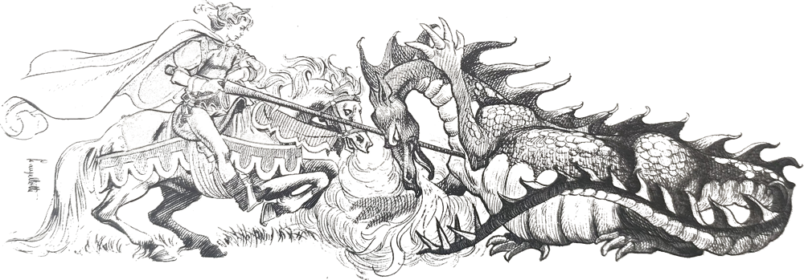

A noite estava radiosa, quente. Um céu tão profundo e com tantas estrelas que parecia uma estar esbarrando na outra. O luar, magnífico, convidava a sair, a passear. E foi o que fizeram o Arrelia e sua turminha. A chuva havia deixado tudo com uma aparência de limpeza, de frescor. Ninguém conseguiria recusar o convite daquela noite maravilhosa, e as portas e as ruas estavam cheias de pessoas que falavam sem parar.
Os nossos amigos andaram por toda a cidadezinha, pois queriam ver tudo o que era possível. Nos arredores havia uns campos muito verdes em que um grande número de pessoas costumava passear nas noites de calor. O Arrelia e as crianças ficaram admirados com a infinidade de vaga-lumes piscando perto dali, sem parar. Eram tantos, mas tantos que fizeram Sérgio, em geral de poucas palavras, sair com esta:
- Não sei se estou no céu ou na Terra!
- Por que, Sérgio? Interrogou o Arrelia.
- Esses vaga-lumes brilham tanto que não sei dizer se eles são ou não estrelas e as estrelas vaga-lumes. Se eles são estrelas, nós estamos de cabeça para baixo.
Carlinhos propôs aos companheiros:
- Vamos pegar vaga-lumes?
Todos se prepararam para a nova aventura, menos Marisa que estava segurando a mão do Arrelia e assim continuou. O Arrelia pediu que não fossem:
- Deixem os coitados em paz com suas lanterninhas! Não estão fazendo mal a ninguém! Depois vocês podem tropeçar e cair no meio do mato! Nenhuma pessoa vai até lá, não estão vendo? O mato é bem mais alto do que aqui e é possível que encubra algum brejo!
As quatro crianças ficaram desanimadas. Carlinhos então não se conformou:

- Eu queria um para por na minha bicicleta! Já pensou como chamava a atenção? Um vaga-lume com uma luz assim grande!
O Arrelia deu risada:
- Cada ideia! Só mesmo você, Carlinhos.
Um pouco além encontraram um cavalo pastando calmamente, e Carlinhos cismou de dar uma volta. Mas desta vez o espertinho não disse nada. Deixou que os outros se afastassem e montou no cavalo em pelo. Quando passou pelo Arrelia e as outras crianças, gritando como um doido, foi um pânico tremendo. Correram para todos os lados. O Arrelia percebeu que era Carlinhos e saiu correndo atrás do cavalo, agitando a bengala e o chapéu desesperadamente:
- Volte aqui, menino! Volte aqui! Você vai cair!
De repente o cavalo deu a volta e o Arrelia passou de perseguidor a perseguido. Saiu correndo na frente do cavalo, jogando o chapéu para um lado, a bengala para o outro. Pulou do caminho e o cavalo passou com o menino agarrado ao seu pescoço. O Arrelia correu outra vez atrás dele:
- Pare! Volte aqui!
Por fim o cavalo parou e Carlinhos saltou todo contente.
- Mas que juízo! – repreendeu o Arrelia. E se você tivesse caído? Não faça mais isso!
- Já dei outras voltas iguais – respondeu o menino. Estou habituado.
- Mesmo assim não faça mais isso – disse o Arrelia tomando fôlego. Quase morri de susto! As outras crianças também!

As outras crianças foram-se aproximando. Várias pessoas que estavam por perto, atraídas pelo movimento, queriam saber o que estava acontecendo. O Arrelia reuniu sua turminha e disse:
- Vamor andando. Antes, porém, precisamos encontrar meu chapéu e minha bengala.
Depois de alguma procura acharam o que procuravam.
- Que alívio! – exclamou o Arrelia. Sem bengala e sem chapéu parace que não estou completo!
Graças à sua aventura, Carlinhos foi o herói da noite. As outras crianças o rodearam querendo saber como conseguira montar daquele jeito. Era um autêntico cavaleiro, como não? Ele repetiu que já havia contado algumas vezes antes, mas na verdade estava no sangue. Seu pai, quando moço, fora cavaleiro e seu avô também.
Os companheiros todos o olhavam com respeito. Não era coisa fácil galopar daquele modo, num cavalo em pelo! E de noite!
- Esse menino é corajoso, não tem dúvida – disse o Arrelia.
Quase estourando de orgulho, o menino confirmou:
- E é verdade mesmo. Coragem não me falta. Que eu me lembre, não tenho medo de nada.
- Assim também não! – exclamou o Arrelia. Como não tem medo de “nauda”? Todos nós temos medo de alguma coisa. Ou melhor dizendo, de várias coisas.
- É, mas eu não tenho – confirmou Carlinhos, completamente vencido pelo prazer da glória.
As outras crianças foram contagiadas pelos modos de Carlinhos e ergueram mais a cabeça, sentindo-se dispostas para o que desse e viesse. O Arrelia olhava-as com um sorriso bondoso.

- Todos temos coragem e também temos medo – disse ele. O que é fácil para um pode ser difícil para outro. Não ter medo de nada é impossível.
Carlinhos olhou-o com ar incrédulo. A aventura o havia transformado. De repente, um grito esquisito, sinistro, partiu de umas árvores próximas. Foi o bastante para acabar com a pretensão dos nossos heróis. Todos ao mesmo tempo arregalaram os olhos e ao mesmo tempo abraçaram-se ao Arrelia com tal violência que quase o derrubaram.
- Que é isso? Calma! Calma!
- Que grito foi esse? – perguntou Iberê.
Os outros não conseguiram perguntar nada.
Passada a surpresa, o Arrelia começou a rir que dava gosto. A custo conseguiu perguntar:
- Ué, estão com medo?
Depois, abraçando as crianças:
- Eu não disse? Bastou o canto de uma ave para que a coragem voasse. O que vocês ouviram foi apenas o canto de uma ave noturna, o urutau. Vamos andando que vou contar-lhes a estória dele.
Ainda assustadas e desconfiadas, as crianças o largaram e principiaram a andar. O Arrelia começou:
- Numa humilde casinha do sertão vivia com seus pais uma moça muito feia. Tinha um rosto que lhe tirava a vontade de olhar-se no espelho. Seus pais, bastante idosos, desejavam ver a filha casada, pois receavam morrer e deixa-la sozinha. Mas não havia caboclo com a coragem suficiente para fazer o sacrifício, e a moça via todas as suas amigas namorando ou se casando enquanto continuava desprezada. De tarde, ela ficava sempre na janela do casebre, os cotovelos pontudos apoiados na madeira rústica, o rosto descansando nas mãos magras e maltratadas. E claro que ela não ficava ali por ficar. Havia um motivo, um grande motivo: esperar os sertanejos que voltavam da roça depois de um dia árduo de trabalho. Tinha esperança de que algum dia um deles haveria de interessar-se por ela. Afinal tinha as suas “qualidaudes”: trabalhadeira, boa filha e excelente cozinheira. Mas qual. Eles passavam por ali sem modificar o passo, apenas tocando de leve a aba do chapéu, num cumprimento rápido, por obrigação. A todos ela respondia com o melhor de seus sorrisos, que não deixava de ser uma careta. “Êta mulher feia!” – um dizia ao outro assim que passavam. A pobre ouvia o cochicho sem perceber as palavras e mantinha a ilusão de que diziam algum elogio a seu respeito.

O tempo foi passando e a moça continuou na sua triste solidão. Uma vez ou outra ela criava coragem e olhava-se no espelho. Via aquele nariz grande, os olhos sempre arregalados lembrando os de uma coruja, a boca enorme e desgraciosa, os cabelos escorridos como crina de cavalo, nos quais nenhum penteado ficava bem, e chorava, chorava desesperadamente. Seus pais percebiam tudo e a olhavam com preocupação. O que seria dela? Não tinham nenhum parente com o qual ela pudesse ficar caso eles morressem. Por fim, desanimada, deixou o hábito de sair à janela. Os sertanejos notaram sua ausência: “Vai ver que era bruxa, arranjou uma vassoura e foi embora!” – comentavam. Para distrair-se, ela passou a sair todas as noites de casa e dava, sozinha, grandes voltas por aqueles caminhos desertos, perdida em seus pensamentos. Com o correr do tempo, acabou por criar amizade nas coisas que existiam nos lugares pelos quais passava: árvores, cercas, pedras... Acabou também por arranjar dois companheiros: um pito de barro e um cachorro que também não tinha nada de bonito.
Era sempre a mesma coisa: quando escurecia, ela percorria os mesmos caminhos; o cachorro, muito alegre, seguia-lhe na frente, cheirando aqui, rolando-se mais adiante, latindo-lhe aos pés, talvez pedindo que ela participasse da brincadeira. Por fim, pouco antes de se recolher, a moça procurava sempre a mesma pedra, sentava-se nela, acendia o pitinho e ficava olhando a fumaça distraidamente.
Uma noite, quando ela estava fazendo isso, ouviu o tropel de um cavalo se aproximando. Naquela cabeça ainda ardia um pouco de esperança e a moça imaginou que era um belo e garboso cavaleiro aproximando-se para casar-se com ela. Escondeu o pito perto da pedra, levantou-se, arrumou-se e começou a andar pela estrada fingindo-se de distraída. O tropel estava bem perto. Aproximou-se e parou. Ela olhou. Um moço muito bem-vestido apeou-se do cavalo. Depois de esclarecer que era um príncipe em viagem, ele pediu-lhe:
- Por favor, prendada senhorita: poderia indicar-me o caminho que vai à estrada principal?
- Ele não ficou com medo da feiura da moça? – quis saber Jaci.
- Não, não ficou porque não enxergava bem e não havia luar – esclareceu o Arrelia, continuando:
- Ela tratou de cativá-lo pela gentileza e ofereceu-se para guia-lo.
- Não é muito longe daqui – disse ela. Porém o caminho é bastante complicado. Posso levar o senhor até lá.
- Mas por favor! Não quero dar-lhe trabalho! – exclamou ele impressionado com tanta gentileza.
- Não é trabalho nenhum! É um prazer!
- Muito obrigado! A senhorita é muito amável! Não sei como agradecer-lhe!

Os dois seguiram a pé, ele puxando o cavalo, na frente o cachorro indo e vindo abanando o rabo, feliz, parecendo compreender que finalmente sua dona ia realizar o velho sonho de casamento. Inteligente ela era, e assim foi possível manter uma conversa agradável com o príncipe. Ele estava encantado. Quando já se encontravam perto da estrada principal, ele surpreendeu-a:
- Perdoe-me o que vou dizer, pois nosso conhecimento tem apenas alguns instantes. É difícil, porém, a gente encontrar moça tão delicada e inteligente quanto a senhorita, e também tão bondosa e bonita. Não desejo perder a oportunidade. Quer casar-se comigo? Por favor, não diga não!
É claro que ela não ia dizer não. Mas controlou-se e mostrou-se um pouco difícil. Deixou que o príncipe insistisse, implorasse e se ajoelhasse. Por fim concordou e ficaram noivos. O príncipe pulava de alegria. Queria conhecer os pais dela o mais depressa possível. Ainda naquela noite!
- Coitada! Até que enfim ela encontrou namorado, não, Arrelia? – disse Marisa.
- Arranjou – respondeu o Arrelia. Mas agora é que aconteceu a tragédia.
As crianças olharam para o Arrelia com curiosidade.
- A Lua, que até então estava escondida, resolveu aparecer – esclareceu o Arrelia. Afastou as nuvens que a cobriam e inundou de luz o sertão. O rosto da moça iluminou-se, e o príncipe, mesmo sem enxergar muito bem, pode apreciar-lhe as feições. Ficou branco de susto. O que era aquilo? Uma bruxa? Teve de conter-se para não pular no cavalo e disparar por ali afora. Como era delicado, inventou uma desculpa:
- Lembrei-me agora que preciso encontrar-me com um mensageiro aí perto na estrada. Peço-lhe para esperar-me que voltarei dentro de um instante.
A moça, de nada suspeitando, concordou. Ele partiu. Ela sentou-se numa pedra e ficou esperando. Cansou-se de esperar. Viu que alguém se estava aproximando e pensou que fosse ele voltando a pé. Não era o príncipe e sim uma feiticeira que a moça conhecia.
- Então, menina, o que está fazendo tão tarde por aqui? – quis saber a feiticeira.
- Espero o meu príncipe – informou a moça. Depois perguntou: - A senhora não viu por aí um moço garboso montado num belo cavalo?


- Não, não vi. Por que você o está esperando?
A moça contou-lhe o que acontecera e exclamou:
- Ah se eu pudesse voar! Vai ver que aconteceu um acidente com o meu noivo e ele está caído em algum lugar. Talvez tenha sido vítima de algum bandido!
- Então você quer voar? Não é tão difícil. Posso dar um jeito.
- Pode? A senhora pode fazer-me voar?
- Sim. Posso transformá-la numa ave. Mas acho melhor você ficar como está.
- Não, não. Faça-me voar! Por favor! Preciso socorrer o meu noivo!
Tanto a moça insistiu que a feiticeira se compadeceu e a transformou numa ave. Nem assim a pobre ficou bonita. Transformou-se numa ave desajeitada, esquisita. De qualquer modo, ficou satisfeita. O cachorro, ao ver o que acontecera, enfiou-se no meio do mato, com o rabo entre as pernas, e ficou só com a cabeça de fora, olhando assustado.
A moça, agora com a forma de ave, voou e foi à procura do noivo. Não deixou escapar nenhum lugar: grutas, árvores, rios. Nem sinal. O homem havia sumido. “Mas ele disse que ia voltar logo! O que terá acontecido?” – pensava ela voando o mais depressa que podia.
- E onde ele estava? – quis saber Jaci.
O Arrelia explicou:
- Estava longe, muito longe! Ela não contava com a velocidade do cavalo! Se o moço estava com pressa de afastar-se dali, o desejo do cavalo não era menor. Ele também havia ficado “assustaudo” com a feiura da moça e ia que nem num foguete pela estrada. Além do mais, era estimulado pelos gritos do dono: “Mais depressa! Mais depressa!” Quando a moça foi encontrada pela feiticeira, cavaleiro e cavalo já estavam bem longe dali. Jamais um cavalo correra tanto. Por onde passavam, todos ficavam espantados.
Um homem que estava na porta de uma venda perguntou ao companheiro:
- O que foi que passou? Parecia um cavalo!
O outro respondeu:
- Cavalo? Com aquela velocidade? Acho que era assombração!
- É mesmo – disse o primeiro. Vai ver que era. Vamos sair daqui!
Bem longe, a moça continuava sua busca, voando sempre. Viu um cavaleiro que seguia vagarosamente seu caminho. Não parecia, mas talvez fosse o príncipe. “Quem sabe?” – pensou ela e desceu, indo pousar no ombro do cavaleiro que estava cochilando. Era um pobre velho, montado num cavalo mais gasto ainda, que mal podia com o próprio peso. A ave pousou no ombro do homem e ele acordou. Querendo ter mais certeza ainda, a moça pousou na cabeça do cavalo e ficou olhando para o homem.
- É, não tem dúvida. Não é mesmo o príncipe.

O homem perdeu toda a sonolência e, com os cabelos em pé, gritou:
- Essa ave esquisita está falando comigo!
Ela perguntou:
- O senhor não viu um príncipe por aí? Sou a noiva dele!
Coitado do velho. Começou a bater no cavalo para que ele corresse. O cavalo, porém, não andava mais depressa do que aquilo. Vendo que não conseguia fazer o animal correr, o velho pulou da sela e disparou pelo caminho, desaparecendo num instante. A ave voou e continuou a procura. Quando percebeu que o dia já estava nascendo, perdeu completamente a esperança. Voltou tristemente para o lugar de onde havia saído e encontrou a feiticeira que fumava o pitinho escondido pela moça quando da chegada do príncipe. Do cachorro nem sombra!
- Não o encontrei – disse a ave.
- É pena – respondeu a feiticeira. Mas tenha paciência. São coisas que acontecem!
- Não posso fazer nada. Bem, quero que a senhora me transforme outra vez no que eu era.
A feiticeira pensou, pensou, coçou a cabeça e disse:
- Olhe, parece mentira, mas não consigo lembrar-me da fórmula. Acho que você vai ser uma ave para toda a vida!
A moça, ou melhor, a ave deu um pulo de susto:
- O que? Vou ser uma ave para sempre?!
Ficou triste, gritou, xingou, pediu, porém não adiantou nada. A feiticeira não conseguia mesmo lembrar-se da fórmula.
A ave voou até encontrar uma árvore oca e ali ficou vivendo. Nunca mais falou. Quando a Lua nasce, dá somente aquele grito que vocês ouviram. Prestaram atenção? Parece que ela diz: “Foi, foi, foi, foi!” É a moça feia que se lembra do noivo que perdeu. Ela quer dizer: “Ele foi embora, foi, foi, foi!” E assim nasceu o urutau.